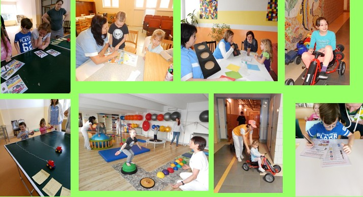

Dopis lékařům
Léčebna respiračních nemocí Cvikov
Martinovo údolí, 471 54 Cvikov
Ing. Rudolf Focke
12.7.2021
Vážené dámy a pánové, po generační obměně, kdy nám odešel do důchodu dlouholetý primář Daniel Schneeberger, jsme se dostali do situace, kdybychom rádi přivítali v našem týmu novou posilu. Máme zájem o lékaře se zkušenostmi, případně i o pracujícího seniora, nebo začínajícího lékaře, kterého jsme schopni do problematiky dětské pediatrie uvést.
Nabízíme:
- Stabilní zaměstnání ve velmi dobrém a zkušeném kolektivu
- Mzdu dle státních tabulek
- Startovací byt přímo v areálu
- Služby máme pokryté externími lékaři
Na závěr bych vám chtěl poděkovat za všechny děti, které jste k nám poslali do dětské části léčebny v minulých letech, a těšíme se na úspěšnou spolupráci i v letech budoucích.
Kontakt:
Léčebna respiračních nemocí Cvikov, p.o. dlcvikov.reditel@tiskali.cz 602545073
Novinky pod stromeček v termínu od 6.11.2021 do 30.3.2022
- Sněhové dělo:
- kompletně vyřešený zasněžovací systém funkční od -2°C
- k dispozici je lanový vlek 75 m s rolbou upravenou sjezdovkou
- Ledová plocha:
- přírodní ledová plocha, syntetický led k celoročnímu bruslení
- syntetický led k celoročnímu bruslení
- Půjčovna:
- 40 párů lyží včetně bot
- 31 párů bruslí a 31 helem
- Dílničky:
- keramická dílna, korálkování, pletení košíků, drátkování, výtvarná odpoledne
- Výlety zdarma:
- jízda na koni, v kočáře, terénním autem, mašinkou, lodí a za sněhem
- Nové herní místo:
- cca 380 m2 v jídelně pavilonu “A“(molitanová stavebnice, X-box)
- Společné cvičení:
- pro maminky pod vedením rehabilitační sestry jednou týdně
- bezplatně masáže pro maminky jednou týdně
- Ubytování:
- 45 pokojů s vlastním WC, sprchou, smart TV, ledničkou a internetem vše zdarma
- Bezpečná oddělení:
- s 5 maminkami, vlastní sesternou, jídelnou, hernou a inhalační místností
- Termo kamera:
- při vstupu do vrátnice bezpečnostní systém měření teploty včetně vyhodnocení
- Tradiční zimní Wellness nabídka:
- od 6.11.2021 do 30.3.2022 pro zlepšení fyzické a psychické pohody
- Finská sauna:
- s ochlazovacím bazénem, sprchou, arktickou mlhovinou a pohádkami v potící místnosti
- 2x týdně bezplatně
- Perlivý bazén:
- objem 4,5m³ s anatomickými sedačkami
- pro zvýšení pohody instalovány 2 kusy průmyslových odvlhčovačů vzduchu
- 2x týdně bezplatně
- Masáž:
- bezplatná 25 minutová masáž pro doprovod pracovnicí rehabilitace jednou týdně
- Vepřové hody:
- na ukončení zimních léčebných pobytů připravíme vepřové hody ve Cvikovském pivovaru bezplatně pro klienty a jednoho rodinného příslušníka
- Vánoční cukroví:
- na cestu domů dostanou maminky 1 kg vánočního máslového cukroví ze soukromé cukrárny
- děti bez doprovodu - 0,25 kg cukroví
- Trixi park:
- maximálně 2 x bezplatný výlet za pobyt
- Bobování:
- 2x bezplatně výlet za sněhem do Bedřichova v případě nedostatku sněhu
Návštěvy od 18.6.2021
Od 18.6.2021 jsou v DL Cvikov povoleny návštěvy rodinných příslušníku i na nocleh v omezeném provozu!
- V probíhajícím turnusu se povoluje návštěva počínaje 18.6., která už zůstane do vašich odjezdů.
- V budovách DL je povinnost používat ochranu úst i nosu ústenkou.
- Návštěvu si musíte předem nahlásit na vrátnici (bude evidována v knize návštěv) a sestře na oddělení.
- V době od 11:00 do 11:30 a od 15:00 do 15:30 nebude vstup návštěv povolen (přestávka na vrátnici)
- Návštěvu na nocleh nahlásíte sestře na oddělení, poplatek uhradíte v pokladně a doklad o zaplacení předložíte sestře na oddělění, která vám vydá lůžkoviny
Osoba, která přijde na návštěvu, se na vrátnici prokáže občanským průkazem a certifikátem s negativním antigenním testem ne starším 48 hodin, nebo s ukončeným očkováním Covid 19.Tato povinnost platí i při výměně doprovodné osoby, jen se prokáže na oddělené u sestře!!!
Výtěrové centrum
- Výtěrové centrum se nachází v pavilonu C
- Do centra je nutno se zarezervovat na internetu,nebo požádat pracovníka vrátnice, aby se zeptal na volný termín - Osobně a ani telefonicky tým sester nerušte!
- V centru sestra zadá zájemce do počítačového systému hygieny, kde zjistí, zda zájemce splňuje podmínky neplaceného výtěru - pokud splňovat nebude,může si nechat udělat test za poplatek 350 Kč.
- Centrum mohou klienti využít i pro antigenní test potřebný např. pro vstup do restaurace atd...
Stravování návštěv
- Od prvního dne ubytování je stravovací povinnost
- Ze tří denních jídel je povinnost si zajistit dvě jídla dle výběru (snídaně+večeře, snídaně+oběd, oběd+ večeře).
- Návštěvy se stravují v jídelně personálu v hlavní budově.
- Strava se časově zajišťuje dle rozpisu na nástěnkách na odděleních.
Zvažte vždy pečlivě každou návštěvu u svých rodinných příslušníků.
Děkujeme vám za pochopení, vrchní sestra DL Helena Rampouchová.

Cena hejtmana za společenskou odpovědnost 2019
Dětská a i dospělá část léčebny respiračních nemocí Cvikov, příspěvková organizace získala ocenění:
Cena hejtmana za společenskou odpovědnost 2019 - 1. místo
v kategorii organizace veřejného sektoru, veřejně prospěšné organizace a organizace, jejichž hlavní náplní činnosti není podnikání s více než 50 zaměstnanci
Poslední aktuální informace
29.4.2020 nastupují do dětské léčebny děti bez doprovodů s výsledkem testu na Covid-19. Situace v Libereckém kraji je nadějná, proto počítáme s nástupním termínem 14. 5., dle plánu za určitých podmínek.
Příkaz ředitele Prohlášení SARS 2 CovidZasněžujeme
Nová trampolína
V naší léčebně každý turnus vítáme "Loutky v nemocnici", protože nabízí dětem zábavu a rozptýlení
Divadélko pro děti - ,, Loutky v nemocnici“
.jpg)
Speciální nabídka pro doprovody
Můžeme Vám nabídnout něco speciálního: Masáž zad.
Ve středu zajišťuje masáž naše rehabilitační sestra J. Skibinská - objednáváte se přímo na rehabilitaci!!!
Čtvrtek + pátek masér - pan Kolář.
- Masáže se budou provádět v přízemí pavilonu "A" - dveře vlevo od MUDr. Hentschelové.
- Školka, která sídlí také v přízemí pavilonu "A" Vám může pohlídat dítko v době masáže (od 11:30) - děti od 3 let věku!!
- Mladší děti si budete muset domluvit s jinou maminkou nebo sestrou na oddělení, pokud nebude zaneprázdněna.
- Masáž zad si mužete rezervovat maximálně 1x týdně. Masáže navíc se hradí přímo masérovi.
- Masáž trvá 20 minut a začne v celou hodini nebo v půl.
- Rezervace pro pana Koláře si můžete zajišťovat u vrchní sestry.
Provozní doba pana Koláře (poslední čas dopolední i odpolední je ještě začátek masáže)
| Den | Dopoledne | Odpoledne | Polední pauza |
|---|---|---|---|
| 28.2. | 8:30 - 11:00 | 12:00 - 13:30 | 11:30 - 12:00 |
| 1.3. | 8:00 - 11:00 | 12:00 - 13:30 | 11:30 - 12:00 |
| 5.3., 7.3. | 8:30 - 11:00 | 12:00 - 13:30 | 11:30 - 12:00 |
| 14.3., 15.3. | 8:00 - 11:00 | 12:00 - 13:30 | 11:30 - 12:00 |
| 18.3., 19.3. | 8:30 - 11:00 | 12:00 - 13:30 | 11:30 - 12:00 |
| 26.3., 29.3. | 8:30 - 11:00 | 12:00 - 13:30 | 11:30 - 12:00 |
Sněžné dělo
Léčebna zakoupila sněžné dělo, aby mohla v zimních měsících zajistit dětem vyžití na lyžích u lyžařského vleku, pokud nenapadne přirozený sníh.
Máme z něj velkou radost.
31.1.019 proběhl Dopravní den.. poznávání dopravních značek, foukání do autíček, jízda na motokárách a odstrkovadlech, atd.... pár záběrů šikovných dětiček

16.1.2019 - návštěva sklárny AJETO - vyfouknutí váziček
Zimní radovánky
Dopravní den 30.10.2018


{kind=link}
{kind=link}
{kind=link}
{kind=link}
{kind=link}
{kind=link}
{kind=link}
{kind=link}
{kind=link}
{kind=link}
{kind=link}
{kind=link}
{kind=link}
{kind=link}
{kind=link}
{kind=link}
{kind=link}
{kind=link}
{kind=link}
{kind=link}
{kind=link}
{kind=link}
{kind=link}
{kind=link}
{kind=link}
{kind=link}
{kind=link}
{kind=link}
{kind=link}
{kind=link}
{kind=link}
{kind=link}
{kind=link}
.jpg){kind=link}